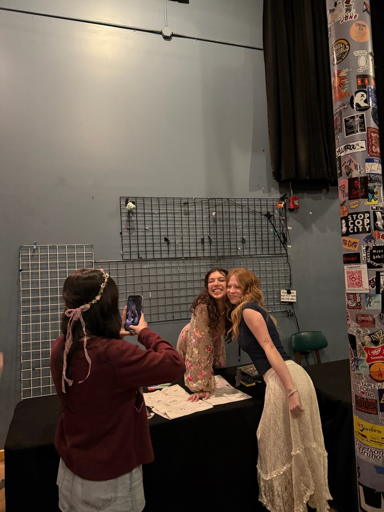
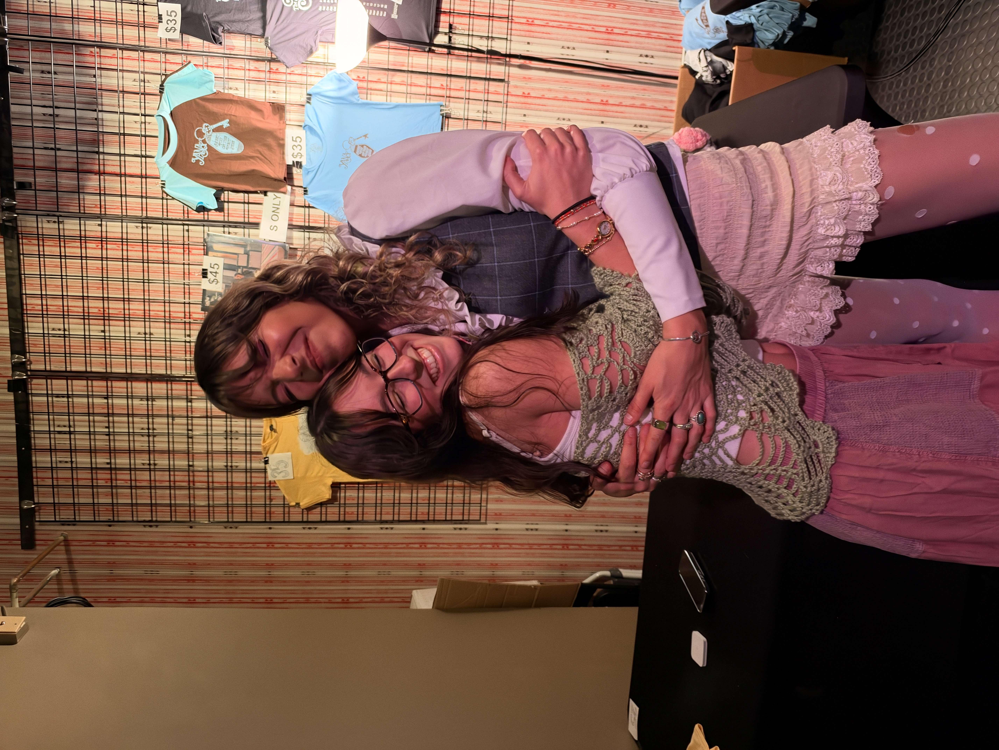

I have been a fan of Andersen's music since the beginning of last year. She had about 20,000 monthly listeners at that point; now she has over 100,000. Andersen takes fan engagement very seriously, and regularly comments on fan posts, responds to messages, and meets fans after shows. I've been to seven of Andersen's shows, six of which I have been lucky enough to capture behind the scenes content for the tour headquarters account that I run.